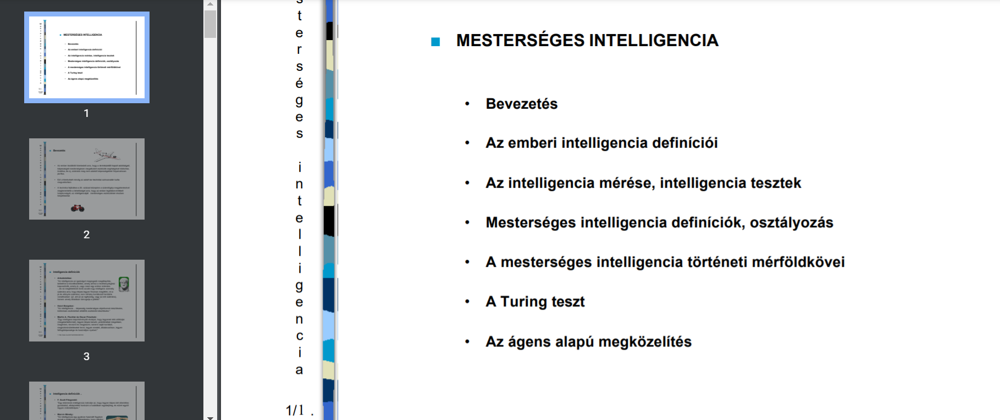

Mesterséges intelligencia alapok

Ez a tárgy a mesterséges intelligencia alalpjait tartalmazza.
Tartalom:
- MI definíciók. Turing teszt. Az ágens alapú megközelítés.
- MI alkalmazási eredmények, területek.
- Szóelemzés. Morfológia típusok. Gépi tanulás. Szabályalapú tudásszemléltetés.
- Tudásszemléltetés formális logikával. Propozíciós kalkulus, predikátumlogika.
- MI nyelvek. A LISP programozási nyelv. A LISP működése, építőelemei. A Prolog szimbolikus programozási nyelv részletezése.
- Tudásszemléltetés szemantikus hálóval. A keret és a script tudásszemléltetési sémák.
- Kereső eljárások. Nem informált kereső eljárások. Informált kereső eljárások. Lokális kereső algoritmusok.
- Evolúciós algoritmusok. Genetikus algoritmus. Mintaillesztő algoritmusok.
- Kognitív pszichológiai alapok. Az emberi idegrendszer és látórendszer jellemzése.
- Mesterséges neurális hálók. Definíció, történeti háttér, alkalmazási példák.
- Előrecsatolt mesterséges neuron-hálók.
- Hátracsatolt mesterséges neurális hálók, együttműködés, versengés. Esettanulmány. Hibrid intelligens rendszerek.
- A gépi intelligencia társadalmi hatásai. A mesterséges intelligencia távlatai. Optimizmus és kritika.